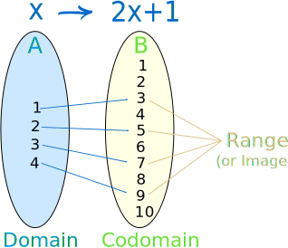
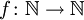
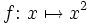
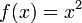

Domain, Range and Codomain

In its simplest form the domain is all the values that go into a function, and the range is all the values that come out.
But in fact they are very important in defining a function. Read on!
Please read "What is a Function?" first ...
Functions
A function relates an input to an output:

Example: this tree grows 20 cm every year, so the height of the tree is related to its age using the function h:
h(age) = age × 20
So, if the age is 10 years, the height is h(10) = 200 cm
Saying "h(10) = 200" is like saying 10 is related to 200. Or 10 → 200
Input and Output
But not all values may work!
- The function may not work if we give it the wrong values (such as a negative age),
- And knowing the values that can come out (such as always positive) can also help
So we need to say all the values that can go into and come out of a function.
This is best done using Sets ...
 |
A set is a collection of things, such as numbers.Here are some examples: Set of even numbers: {..., -4, -2, 0, 2, 4, ...}
Set of odd numbers: {..., -3, -1, 1, 3, ...} Set of prime numbers: {2, 3, 5, 7, 11, 13, 17, ...} Positive multiples of 3 that are less than 10: {3, 6, 9} |
In fact, a function is defined in terms of sets:
Formal Definition of a FunctionA function relates each element of a set |
 |
Domain, Codomain and Range
There are special names for what can go into, and what can come out of a function:
| What can go into a function is called the Domain | |
| What may possibly come out of a function is called the Codomain | |
| What actually comes out of a function is called the Range |

Example
• The set "A" is the Domain,
• The set "B" is the Codomain,
• And the set of elements that get pointed to in B (the actual values produced by the function) are the Range, also called the Image.
And we have:
- Domain: {1, 2, 3, 4}
- Codomain: {1, 2, 3, 4, 5, 6, 7, 8, 9, 10}
- Range: {3, 5, 7, 9}
Part of the Function
Now, what comes out (the Range) depends on what we put in (the Domain) ...
... but WE can define the Domain!
In fact the Domain is an essential part of the function. Change the Domain and we have a different function.
Example: a simple function like f(x) = x2 can have the domain (what goes in) of just the counting numbers {1,2,3,...}, and the range will then be the set {1,4,9,...}
And another function g(x) = x2 can have the domain of integers {...,-3,-2,-1,0,1,2,3,...}, in which case the range is the set {0,1,4,9,...}
|
Even though both functions take the input and square it, they have a different set of inputs, and so give a different set of outputs. In this case the range of g(x) also includes 0. |
|
|
Also they will have different properties. For example f(x) always gives a unique answer, but g(x) can give the same answer with two different inputs (such as g(-2)=4, and also g(2)=4) |
So, the domain is an essential part of the function.
Does Every Function Have a Domain?
Yes, but in simpler mathematics we never notice this, because the domain is assumed:
- Usually it is assumed to be something like "all numbers that will work".
- Or if we are studying whole numbers, the domain is assumed to be whole numbers.
- etc.
But in more advanced work we need to be more careful!
Codomain vs Range
The Codomain and Range are both on the output side, but are subtly different.
The Codomain is the set of values that could possibly come out. The Codomain is actually part of the definition of the function.
And The Range is the set of values that actually do come out.
Example: we can define a function f(x)=2x with a domain and codomain of integers (because we say so).
But by thinking about it we can see that the range (actual output values) is just the even integers.
So the codomain is integers (we defined it that way), but the range is even integers.
The Range is a subset of the Codomain.
Why both? Well, sometimes we don't know the exact range (because the function may be complicated or not fully known), but we know the set it lies in (such as integers or reals). So we define the codomain and continue on.
The Importance of Codomain
Let me ask you a question: Is square root a function?
If we say the codomain (the possible outputs) is the set of real numbers, then square root is not a function! ... is that a surprise?
The reason is that there could be two answers for one input, for example f(9) = 3 or -3
A function must be single valued. It cannot give back 2 or more results for the same input. So "f(9) = 3 or -3" is not right!
But it can be fixed by simply limiting the codomain to non-negative real numbers.
√In fact, the radical symbol (like √x) always means the principal (positive) square root, so √x is a function because its codomain is correct.
So, what we choose for the codomain can actually affect whether something is a function or not.
Notation
Mathematicians don't like writing lots of words when a few symbols will do. So there are ways of saying "the domain is", "the codomain is", etc.
This is the neatest way I know:
|

|
this says that the function "f" has a domain of "N" (the natural numbers), and a codomain of "N" also. |
|

or  |
and either of these say that the function "f" takes in "x" and returns "x2" |
There is also:
Dom(f) or Dom f meaning "the domain of the function f"
Ran(f) or Ran f meaning "the range of the function f"
How to Specify Domains and Ranges
Learn how to specify Domains and Ranges at Set Builder Notation.